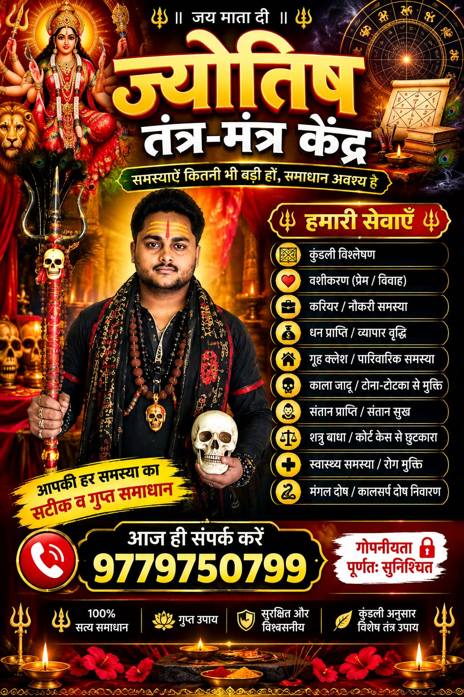

✦
Kundli Analysis
Understand key aspects of your birth chart and receive personalized astrological guidance.
View Service →Personalized astrology and traditional spiritual guidance for love, relationships, marriage, career, business, family and life's important questions.
Explore consultation areas and choose the service that matches your concern.
Understand key aspects of your birth chart and receive personalized astrological guidance.
View Service →Guidance for relationship concerns, compatibility, communication and emotional situations.
View Service →Traditional astrological guidance for marriage-related questions, compatibility and relationship concerns.
View Service →Guidance for career direction, job-related concerns, professional decisions and future planning.
View Service →Traditional astrology-based perspective for business, professional growth and financial concerns.
View Service →Guidance for family relationships, household concerns and personal situations.
View Service →
Every consultation begins with your situation. The goal is to help you understand the traditional astrological perspective and possible next steps.
Reach out by phone or WhatsApp.
Tell us about your concern.
Receive personalized guidance.
Understand the guidance discussed.
Choose a service and request a personalized consultation.